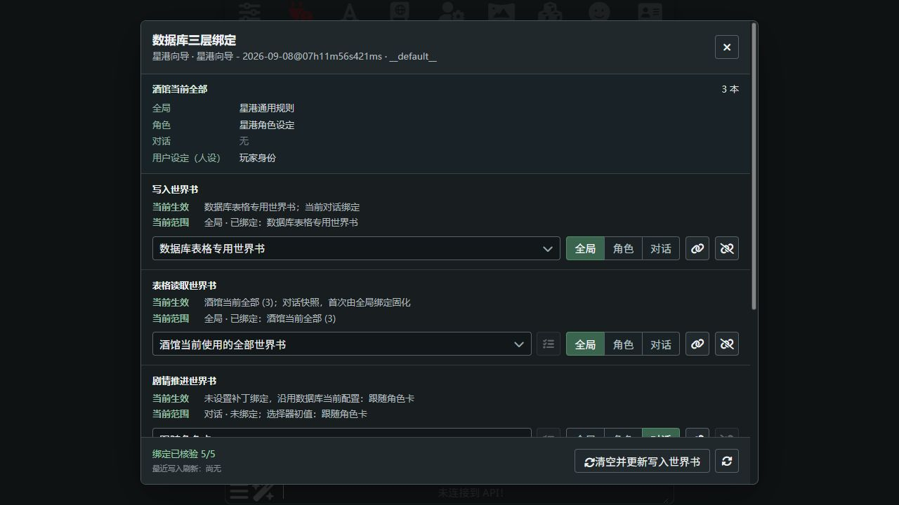
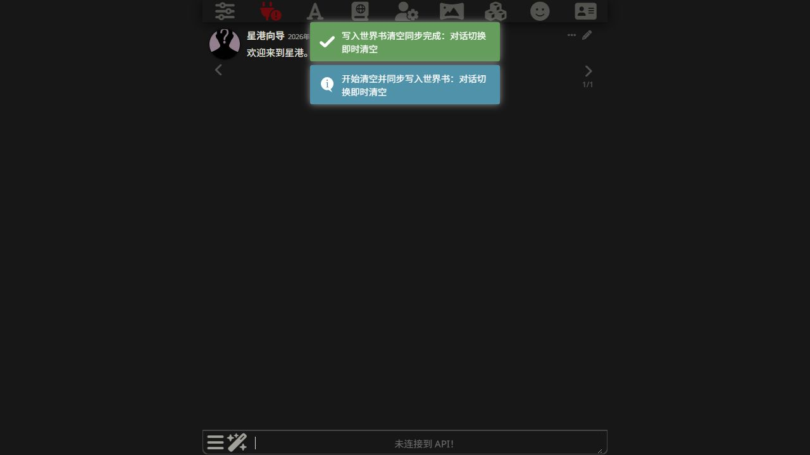
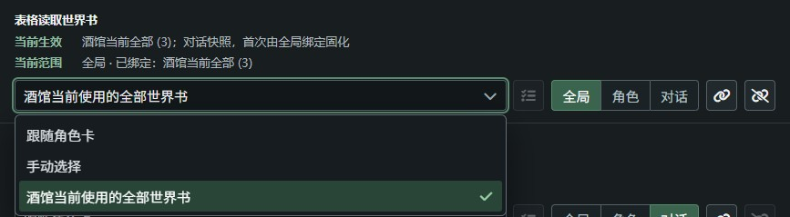
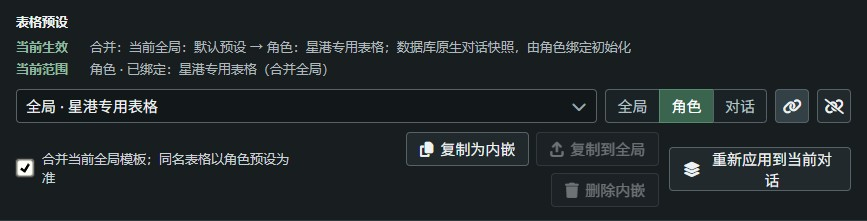
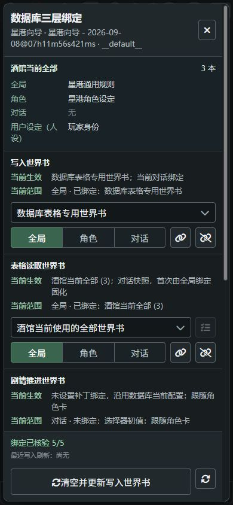
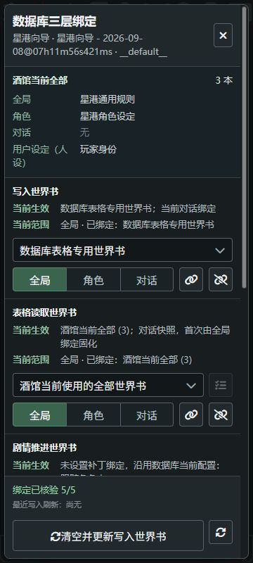

SILLYTAVERN / TAVERN HELPER
数据库三层绑定补丁
给数据库单独指定写入的世界书，
让不同角色使用各自的表格预设。
把通用设置保存一次，让新对话自动继承；有特殊需求的角色单独设置，已有对话保留自己的配置。这是三层绑定主要解决的事。
使用要求：需要酒馆助手和数据库 spv9.2.5，安装并启用后使用。其他版本见下方兼容性记录。
以下操作均从“扩展程序 → 数据库三层绑定”进入。

数据库已经会记住设置，为什么还需要三层绑定？
数据库 spv9.2.5 已经会按角色保存世界书配置，也会为对话保留自己的表格模板。问题不在于“完全不能绑定”，而是这些设置各有自己的保存范围：通用设置怎么给新角色用，同一角色的某条对话如何例外，角色专用表格如何与通用表格一起用？补丁把这些继承关系补上。
| 设置 | 数据库原生规则 | 补丁补充什么 |
|---|---|---|
| 三个世界书设置 | 写入目标、填表读取、剧情推进读取按角色保存，同一角色的对话共用。 | 增加全局默认和对话绑定。对话已有值优先；缺少时先继承角色，再继承全局。 |
| 表格模板 | 管理全局模板和对话自己的模板，已有对话可以保留独立结构。 | 为角色绑定预设；新对话缺少模板时可合并全局与角色预设，同名整张表格以角色为准。 |
| 世界书同步 | 恢复聊天数据后自动同步；部分无数据或提前返回的路径可能留下旧条目。 | 切换对话时安排清理、等待和重试，提供提示及手动同步按钮。 |
拿世界书绑定举个例子
- 全局绑定“数据库表格专用世界书”。没有角色专用绑定的新对话，就继承这本书，不必逐张卡重复设置。
- 给某张角色卡绑定“冒险记录”。这张卡的新对话优先继承角色设置，其他角色不受影响。
- 这张卡的一条分支对话改绑“支线记录”。它以后使用自己的绑定，同一角色的其他对话不会一起改。
- 之后修改全局默认，已有对话仍保留之前保存的绑定。全局是继承时的默认值，不是随时覆盖所有对话的总开关。
所以，补丁里选“全局”看到的是默认绑定；数据库界面看到的是当前角色正在使用的配置，两边不一定相同。关闭对话后也可以保存全局默认，等打开对话时再按优先级应用。
表格模板有单独的规则：已有数据库对话模板始终保留。想主动合并已有对话，用“重新应用到当前对话”，不是反复点击角色绑定。补丁的“全局写入绑定”也不等于酒馆的“全局世界书”，后者仍需在酒馆世界书界面设置。
如果只用少数角色、同一角色的对话都用相同世界书，又不需要角色模板合并，数据库原生设置可能已经够用。需要通用默认、角色例外、对话例外时，三层绑定才更省事。下面分别介绍怎么设置。
表格写到专用世界书，不再混进角色设定
数据库生成的表格条目如果一直写进角色世界书，就会和作者的设定混在一起。单独建一本“数据库表格专用世界书”，把它固定为写入目标，角色世界书就只负责角色设定，表格内容也更容易查看和管理。
数据库原生就可以指定写入目标，也会在切换对话后恢复表格并同步。补丁让这个目标可以按全局、角色、对话分别绑定，并补上清理、等待和重试：例如新版原生链路在没有可用表格数据时会直接返回，未必清掉旧条目，补丁会单独安排清理，再等待当前对话的数据就绪后同步。
别漏掉：专用世界书要加入酒馆的全局世界书。补丁里的“全局写入绑定”只决定写到哪里，不会自动完成这一步。酒馆全局世界书负责让正文读取；只设写入目标，可能出现“表格已经写入，正文却没读到”。
怎么设置
- 在酒馆的世界书界面新建一本空白世界书，例如“数据库表格专用世界书”。
- 把这本书加入酒馆的全局世界书。这一步让正文生成能按条目的启用和触发规则读取表格内容，不要只创建文件。
- 打开绑定面板，在“写入世界书”一项选择“全局”，再选中刚建的世界书。
- 点击链接图标保存。希望某个角色使用另一本文档时，在“角色”范围单独绑定即可。
- 已有对话如果仍绑定旧目标，在“对话”范围改为这本书；只改全局不会覆盖旧对话的绑定。
- 点击底部“清空并更新写入世界书”，等结束提示后，打开目标世界书检查当前表格。

手动按钮和自动同步使用同一套处理。同步开始和结束会有提示；正在处理时再次点击，只会提示已在进行，不会重复启动。期间切换或关闭对话，会使旧对话的同步任务失效。

清理沿用数据库的条目标记和隔离规则，不是删除整本书，也不保证清除其他隔离编号或外部导入留下的内容。专用世界书用于展示当前对话的表格，不是所有对话的归档；第一次调整写入目标前，仍建议备份。
让填表时也能读到当前世界书
主对话能看到的设定，负责填表或剧情推进中召回任务的次要 API 不一定都能看到。例如，全局世界书里写了通用规则，用户设定绑定的世界书里写了玩家身份，但数据库选择“跟随角色卡”时，普通世界书读取主要取角色绑定，不会自动汇总这些来源。
选择“酒馆当前使用的全部世界书”后，读取来源包含全局、角色、用户设定（人设）和对话当前绑定的世界书。这样，数据库处理表格和相关剧情资料时可以参考同一套背景，不必为每张卡重新维护一份手动列表。
怎么设置
- 在“表格读取世界书”中选择要保存的范围。通常选“全局”，作为后续对话的默认值。
- 展开选择器，选择“酒馆当前使用的全部世界书”，点击链接图标保存。
- 需要剧情推进或其中的召回任务读取这些资料时，在“剧情推进世界书”中单独做同样的设置。只改“表格读取世界书”不会同时修改剧情推进。
- 检查“当前生效”的来源和世界书数量；旧对话已有独立绑定时，要在“对话”范围调整。

不想读取这么多内容，可以继续选择“跟随角色卡”或“手动选择”。手动模式旁的列表按钮能直接选择世界书和条目，不必回到数据库界面操作。
“全部”是当前绑定的书，不是书库里所有文件，也不是把每条内容强制注入。新版仍会处理条目启用、关键词触发和 Agent 筛选；填表提示词通过 $4 使用世界书内容，剧情推进任务通过 $1 使用。对应占位符没有放进提示词，就不能仅靠改绑定让模型看到资料。交火向量召回有独立流程，不等同于这里的世界书读取。
每张卡选自己的表格，还能合并全局模板
你可以给不同角色绑定不同的表格预设，不用每次开新对话都重新选择。如果大多数卡都需要“时间、地点、背包”，只有少数卡需要“法术”或“阵营”，也不用给每张卡复制一整套通用表格。
把通用表格放在全局预设，角色预设只放它需要补充或替换的表格。开启合并后，新对话继承模板时会先取全局，再合入角色预设：同名表格以角色预设为准，不同名表格保留。这里合并的是模板，不是把两张同名表的行拼在一起。
怎么设置
- 先在数据库中准备好通用表格预设，以及角色要使用的预设，并设置好全局默认模板。
- 进入对应角色，在绑定面板的“表格预设”中选择“角色”。
- 选择角色预设，需要叠加通用表格时勾选“合并当前全局模板；同名表格以角色预设为准”，再点击链接图标保存。
- 新建对话后，在数据库中检查继承的表格。不勾选合并时，仍是原来的角色预设优先行为。

自动继承只补充尚无对话模板的情况。已有数据库原生对话模板会保留，不会因为换了角色绑定或全局预设而被覆盖；没有角色绑定时，沿用数据库自己的全局回退。
想让预设跟着角色卡一起分享？
普通绑定只引用预设名称，对方也需要有对应预设。内嵌绑定则把预设正文存在角色卡里：可以把一个全局预设复制为内嵌预设，再绑定它。两种绑定都能开启合并全局。
内嵌预设可以删除，也可以复制回全局。它与原预设是独立副本，不会互相同步修改。制卡作者可按内嵌预设标准写入。
旧对话也想用合并后的表格？
- 打开“重新应用到当前对话”。
- 选择一个或多个全局、内嵌预设。同名预设会标明来源。
- 调整列表顺序，越下方的同名表格越优先。
- 确认应用。合并后的模板交给数据库自己的公开 API 迁移，再到数据库检查表结构和数据。
重新应用会改变当前对话模板，操作前备份。普通对话模板的选择仍在数据库中完成，点击“在数据库中管理对话模板”即可进入。
绑定如何生效
- 全局
- 通用默认配置，没有角色绑定时使用。
- 角色
- 这张卡的专用配置，保存在角色卡中。
- 对话
- 已有快照优先；缺少时先找角色，再找全局，继承后保存到当前对话。
选择范围是在查看或编辑这一层，不是在切换当前对话实际使用的配置。选完项目要点击链接图标保存，断链图标用来解除这一层绑定。
保存后分别看“当前范围”和“当前生效”：前者告诉你这一层绑定了什么，后者告诉你现在真正用的是什么、来自哪里。选择器里的“待保存”只是草稿。
数据库 spv9.2.5 本身已按角色保存写入世界书、填表读取世界书和剧情推进世界书配置，同一角色的不同对话会共用。补丁在此基础上增加全局默认和对话优先级；因此，补丁里的“全局”与数据库当前角色的设置不一定相同。
没有打开对话时，可以保存全局默认，面板显示“默认绑定”，不会强行改写数据库当前角色的世界书配置。角色操作需要选中角色，对话操作需要打开对话。已有对话保留自己的绑定，不会被新的全局默认覆盖。
上面的继承规则适用于补丁管理的绑定。普通对话表格模板由数据库管理，角色模板和手动合并的边界见上一节。
桌面与手机
上方是桌面面板，下面是两档手机尺寸。截图使用隔离环境中的虚构角色，展示面板布局；具体操作见前面的步骤。


兼容性
当前基本实测环境：SillyTavern 1.18.0、酒馆助手 4.8.19、数据库 spv9.2.5。
本轮 spv9.2.5 进行过基本测试和实机测试；下表其余版本只进行过基本测试。演示对话没有表格行，未测试非空表格写入或真实模型生成。截图沿用早期演示，个别状态文字可能与新版不同。
| 数据库 | 证据 |
|---|---|
| 完整记录见兼容性表。 | |
常见问题
为什么改了全局，旧对话没有变化？
旧对话已经有自己的快照，因此仍以它为准。修改全局用于后续继承，不会批量改写旧对话。普通对话模板在数据库中管理，需要合并时使用显式“重新应用”。
为什么选完项目还显示“待保存”？
选择器只修改草稿，还需要点击链接图标。保存后检查当前范围的“已绑定”，不要只看选择器文字。
切换对话后，世界书还是上一条对话的内容？
先等数据库恢复和同步结束，检查“写入世界书”的当前生效目标。仍不正确时，用“清空并更新写入世界书”手动执行一次，并记录结束提示；有错误时不要把绑定核验通过当成内容已同步。
如何提供有效的错误反馈？
提供补丁版本、数据库版本、复现步骤及脱敏错误摘要。不要公开完整 diagnose()、getState() 或 getCharacterData() 输出，它们可能包含角色、聊天和世界书名称。
许可与隐私
采用 PolyForm Noncommercial 1.0.0，允许范围以许可全文为准。商业用途不在此许可授权范围内；这是源码公开的非商业许可，不是 OSI 定义的开源许可。分发时保留必要声明。
全局绑定和 UI 状态保存在脚本变量中；角色绑定与内嵌预设保存在角色卡，分享前检查卡内是否带有私人内容。本网站不接入分析统计、账号系统或第三方字体。